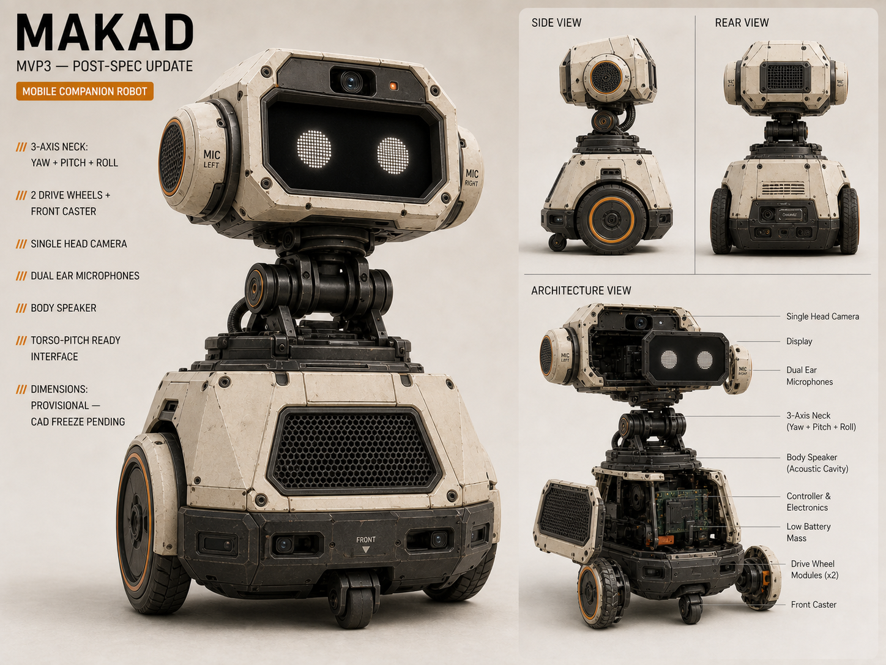

Makad
Intellectual property & innovation in my expressive AI floor droid — M4K4-D
What is Makad?
The robot this entire presentation is about.
In plain English
Makad (M4K4-D, "M4") is a small wheeled companion robot — R2-D2 in spirit. It lives on your floor, hears you in normal English, tracks you with a camera, moves its head on 3 axes, makes original droid sounds, and follows you around a room.
It is not a smart speaker or English chatbot. Screen, head, sound, wheels — all timed together so M4 feels like one living character.

What I created — Makad's original assets
This is the IP I own. Copyright protects all of it automatically — I authored every layer.
My original work in Makad
- Head motion storyboard — 19 motions with keyframes, timing, curve codes (SMOOTH, PULSE, WAVE…), MJ5/MS7 motion profiles
- Face animation system — two-eye identity on LVGL: E-neutral, E-sleep, E-laugh, gaze tracking, music-reactive vibe
- Astromech sound library — original droid vocabulary with acoustic grammar (register, contour, density, articulation)
- Expression composer — firmware + docs: how face, head, sound, wheels coordinate and interrupt each other
- Design & documentation — concept renders, dimensional baseline, vision doc, 14 specsheets, 31K+ lines
Author: Jiya Singh · Copyright Act §13 — literary works, artistic works, sound recordings, software

Makad's physical & visual identity
Original industrial design — inspired by astromech companions, not a replica of any film character.
 3-axis head mechanism · RP-01
3-axis head mechanism · RP-01
Dimensional baseline · ~30 cm floor droid Concept render · scrappy industrial look
Concept render · scrappy industrial lookThank you
Questions about Makad?